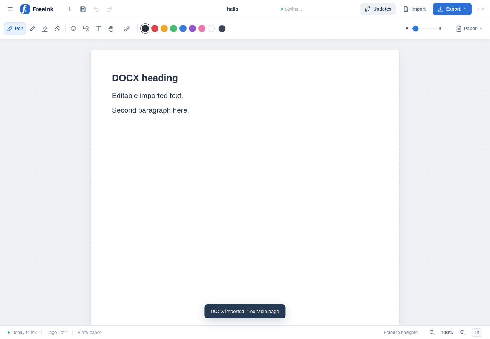

✎ Pen
Write like you mean it.
Pens, pencils, highlighters, shapes and an eraser—ready for your next great scribble.
A beautiful little home for your handwriting, sketches, and big thoughts. Write naturally, organize freely, and export razor-sharp PDFs—without subscriptions.
Open source · Free forever · No account needed
Whether it's a quick note or a page full of diagrams, FreeInk gives your ideas room to grow.
Pens, pencils, highlighters, shapes and an eraser—ready for your next great scribble.
Keep everything together with multiple pages, searchable notebooks and paper templates.
Handwriting and shapes export as real PDF vectors, so they stay sharp when you zoom.
Paste screenshots, insert images, and import PDF or DOCX documents in the desktop app.
Local autosave, editable .freeink backups and no account required. Your work stays in your hands.
Made in the open, free to use and improve. See the code, contribute, or make it your own.
A familiar, distraction-light workspace built around your notes. Here’s an editor capture from an earlier working prototype.
FreeInk · Windows editor preview

Choose your platform and get creating. No account or subscription required.
Best for Windows desktops and pen-enabled devices.
Universal build for Apple Silicon and Intel Macs.
Yes. FreeInk is an independent, MIT-licensed open-source project. There are no subscriptions or account requirements.
Notes are saved locally in the app's browser-backed storage. There is no cloud sync. Export a .freeink backup regularly, especially before reinstalling or moving computers.
Ink and shapes are exported as vectors, so they remain sharp when zoomed in. Imported photos and scanned PDF backgrounds are raster images and retain their original resolution limits.
Yes in the desktop app. PDF pages are rasterized as backgrounds for annotation, and DOCX text is converted into editable blocks with approximate formatting. The standalone HTML has fewer import features.
The current Mac build is unsigned and not notarized. Gatekeeper may block its first launch. Only approve it through Apple's documented process if you trust the file and source.
The installed Windows EXE can check for GitHub updates inside FreeInk. MSI users install newer MSI packages manually. Unsigned Mac builds currently use manual downloads.
Your next favorite idea is just a stroke away.